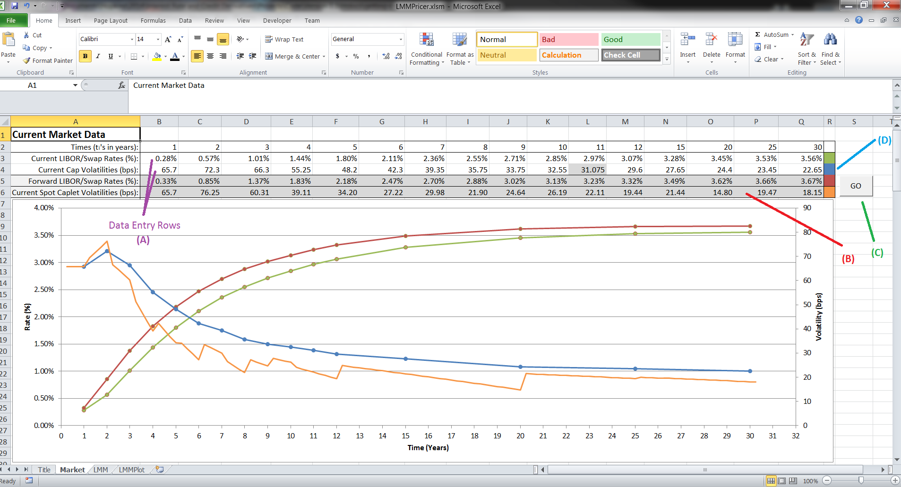

|
I designed and programmed this software as part of two class projects in my senior year of college at Johns Hopkins University where I'll be receiving a B.Sc. in Physics and another B.Sc. in Applied Mathematics & Statistics with a Finance Concentration. The project was used both for a presentation on the LMM to my Interest Rate and Credit Derivatives class (the Finance basis of the program) and in a presentation to my Practical Scientific Analysis of Big Data class (the CUDA/Performance basis of the program). The goal was to create an easy-to-use, powerful and fast LIBOR Market Model implementation that could be used to price various derivatives quickly enough to be appropriate for a trading environment. I accomplished this by utilizing fast C++ functions for any calculation that required even "moderate-lifting", and most importantly by utilizing CUDA code to generate the LMM sample paths in parallel rather then sequentially on the CPU (actually the CPU code is a parallel/sequential-hybrid calculation method and is currently much faster than the GPU code).
The software uses a basic version of the LIBOR Market Model described in [1] with 1,2 and 5-year tenors (though the LMMPricer.dll code supports any sized tenors). Caplet spot volatilities are used as the Lambdas (aka Forward Rates Instantaneous Volatilities) directly, since the formula given in [1] for calculating the Lambdas assumes time-homogeneity which isn't always observed in the market. Attempting to compute the Lambdas in a time-inhomogeneous market results in (nonsensical) negative values. The caplet volatilities are stripped from the cap volatilities using the method described in [3] and more detail in [2]. First we calculate cap prices for each 3-month tenor from 1-year until year 30.25. We get data points for these smaller scales (program takes inputs in 1, 2, and 5-year tenors) by linearly interpolating and extrapolating. Once we calculate these (at-the-money) cap values, we can subtract off subsequent ones to get caplet values at the various data points. Finally we get the caplet volatilities by solving the Black-76 formula for a caplet price for the implied volatility using the secant method.
I would like to thank Professor David Audley for helping me understand the LMM and answering the (many) questions I had about its implementation. I would also like to thank Professor Tamas Budavari for helping me find some substantial CUDA optimizations and helping me with how best to get the LMM implemented on the GPU.
The LMM Pricer software, this and all other included documents, source code and components are copyrights of the author (Douglas James Daly Jr.) unless otherwise stated here.
Microsoft Windows and Microsoft Excel are copyrights of Microsoft Corporation. CUDA is a copyright of NVIDIA Corporation.
This software is provided AS-IS without any warranty or guarantee. The author claims no responsibility for its use or misuse nor any responsibility in the consequences of its use, nor does he guarantee it will work on every system.
This software is licensed under the GNU Public License (GPL), see the included LICENSE file for details.
Your use of this software constitutes a binding agreement to the terms set forth here, in the README file and in the LICENSE file. If you do not agree to these terms then do not use the software.
The following changes have been made from Version 0.2 to the (current) Version 0.2.1:
The following changes have been made from Version 0.1 to the (current) Version 0.2:
The following changes are planned for the next Version of the software:
The following components are required to run the software:
In order to utilize the GPU computation portions of this software you must have a CUDA-enabled video card and up-to-date drivers.
In Excel you must allow the workbook to run macros (which Excel will notify you of upon opening - click "Enable Macros").
The Excel Workbook contains multiple tabs. Knowing how to use them is (obviously) important. We'll consider them, in order, describing their use and giving step-by-step instructions.
This tab is the one open when you open the workbook. It contains links to this and other useful and important documents as well as general information about the software.
The Market tab is where all interest rate market data is entered for use in generating LMM sample paths. There are only two rows where you need to change values:
|  |
|
The above figure shows the key features of the Market tab. Simply enter the current LIBOR swap curve for the specified tenors in Row 3 (in percent) and then enter the current Cap Volatilities (in basis points) in Row 4. Once you're done click on the "GO" button which will strip the caplet volatilities from the cap volatilities you entered.
If you're interested in more detailed caplet volatility data, the calculation for all volatilities and quarterly tenors is done below the chart and can be seen there.
The LMM tab contains the parameter entry and the results of running the LIBOR Market Model Monte Carlo simulations. The steps below outline how to perform simulations.
Also note that the more sample paths you want to generate the longer the calculation will take. Computing on the GPU is much faster than on the CPU (see ** above), but the CPU is very fast. Depending on your system, you may not even be able to notice the difference between the two methods for small amounts of sample paths (1000 or less).
The general process for using the workbook is as follows:
The following additional resources are included with this software:
| Name |
|
Description |
|
Link |
| README | The Read-Me file which contains lots of important information about the software, it's use, licensing, contact, etc. | Click Here to Open | ||
| LICENSE | The copy of the GNU Public License (GPL) which outlines the licensing of this software and the restrictions (rather, lack-thereof) it imposes on use, copying, modifying, re-distributing, etc. It's important if you want to include code into your project(s) or change this project that you understand the terms of this license agreement. | Click Here to Open | ||
The following additional resources can be found online:
| Name |
|
Description |
|
Website |
|
Link |
| Perhaps the best resource in the world for any questions you may have. | Google.com | Click Here | ||||
| Excel Help Forums | A useful help/discussion forum for all of your Excel related questions. | ExcelForum.com | Click Here | |||
| CUDA Zone | The developer zone for NVIDIA's CUDA programming language. Contains valuable resources and sample code for writing programs that utilize the processing power of CUDA-enabled video cards. | Developer.NVIDIA.com | Click Here | |||
| GNU Licenses | The license page of the GNU Project's website. Contains information on the different licenses offered by GNU and information about each. | GNU.org | Click Here | |||
| CProgramming Forum | The CProgramming board is perhaps the largest programming forum on the internet devoted to C/C++ programming. Extremely helpful for the tough problems you can't figure out on your own with regards to C/C++ programming. Just make sure you've spent some time trying to figure out the problem yourself first, and of course, post your source code when asking a question. | Cboard.Cprogramming.com | Click Here | |||
The following additional resources can probably be found at your local university's library or on Amazon.com:
| Title |
|
Author |
|
Comments |
|
Link |
| Options, Futures and Other Derivatives (8th Ed.) | Hull, John C. | Known as the "Derivatives Bible" for good reason - this textbook is incredibly comprehensive and geared towards undergraduate/masters students as a first course in Financial Derivatives. Very thorough both qualitatively and quantitatively. It's generally my go-to book for financial derivatives. | Amazon | |||
| The LIBOR Market Model in Practice | Gatarek, Bachert & Maksymiuk | An excellent (heavily mathematical) work on how to implement, calibrate, etc. the LIBOR market model. It's worth noting that Gatarek is the "G" in the BGM-Model (aka the LIBOR Market Model). | Amazon | |||
Notice how this part's at the end? Before contacting the author with questions/comments/concerns please make sure you've checked this document, the README file, and the FAQs file for an answer to your question. If the answer to your question isn't in any of those, search through all the other additional resources. If you still have a question then contact the author as a last resort.
Bug reports are welcomed and encouraged - please include as much detail as possible when submitting a bug report. Also note the System Requirements for the software, if your system doesn't meet these requirements do not submit a bug report. Bug reports are for bugs that only occur on supported systems.
If you'd like to contribute to this project, feel free (that's the great thing about the GPL!), if you'd like your code added to this particular project contact me and we'll see if it's something worth adding (you'll be given complete credit for any portions you add of course).
Please direct all inquiries to:
Doug Daly
douglas (dot) daly89 (at) gmail (dot) com
The following resources/references were used in the development of this software: